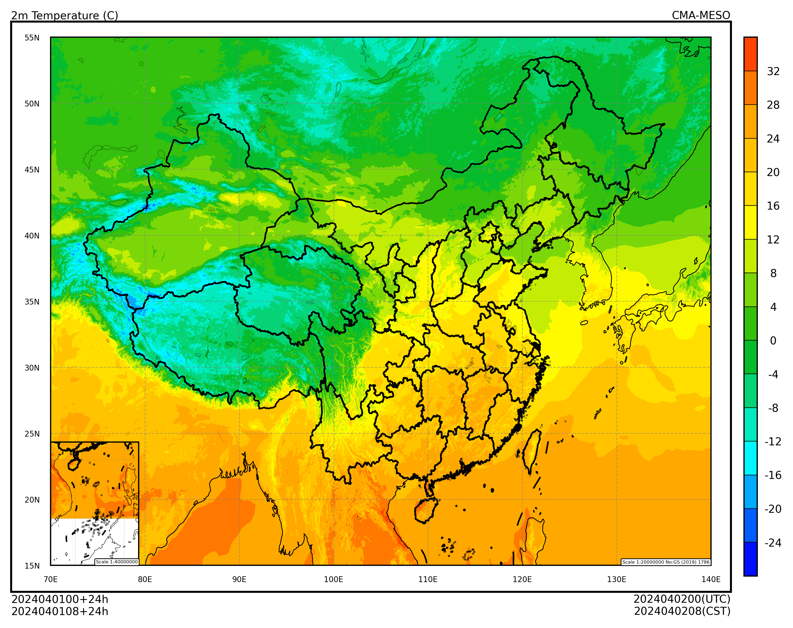

iris#
本节介绍如何使用 iris 加载 GRIB2 要素场，并使用 cedarkit-maps 绘图。
安装#
使用 conda 安装 iris 和 iris-grib
conda install -c conda-forge iris iris-grib
准备#
导入需要的包
import xarray as xr
import pandas as pd
import iris
设置绘图的数据参数，使用 CMA-MESO 2024 年 11 月 14 日 00 时次 024 时效数据。
system_name = "CMA-GFS"
data_type = "cma_gfs_gmf/grib2/orig"
start_time = pd.to_datetime("2024-11-14 00:00:00")
forecast_time = pd.to_timedelta("24h")
加载数据#
设置 GRIB2 数据文件路径
file_path = '/g3/COMMONDATA/OPER/CEMC/GFS_GMF/Prod-grib/2024111400/ORIG/gmf.gra.2024111400024.grb2'
file_path
'/g3/COMMONDATA/OPER/CEMC/GFS_GMF/Prod-grib/2024111400/ORIG/gmf.gra.2024111400024.grb2'
注：可以使用 reki 库查找本地文件路径
Show code cell source
from reki.data_finder import find_local_file
file_path_use_reki = find_local_file(
data_type,
start_time=start_time,
forecast_time=forecast_time,
)
file_path_use_reki
Show code cell output
PosixPath('/g3/COMMONDATA/OPER/CEMC/GFS_GMF/Prod-grib/2024111400/ORIG/gmf.gra.2024111400024.grb2')
使用 iris 加载温度要素场
# cubes = iris.load(file_path, "air_temperature")
cubes = iris.load(file_path)
print(cubes)
---------------------------------------------------------------------------
KeyError Traceback (most recent call last)
Cell In[5], line 2
1 # cubes = iris.load(file_path, "air_temperature")
----> 2 cubes = iris.load(file_path)
3 print(cubes)
File /g4/wangdp/lang/miniforge/miniforge3/envs/py312-cedar/lib/python3.12/site-packages/iris/__init__.py:661, in load(uris, constraints, callback)
637 def load(uris, constraints=None, callback=None):
638 """Load any number of Cubes for each constraint.
639
640 For a full description of the arguments, please see the module
(...)
659
660 """
--> 661 cubes = _load_collection(uris, constraints, callback).combined().cubes()
662 return cubes
File /g4/wangdp/lang/miniforge/miniforge3/envs/py312-cedar/lib/python3.12/site-packages/iris/__init__.py:309, in _load_collection(uris, constraints, callback)
306 _MULTIREF_DETECTION.found_multiple_refs = False
308 cubes = _generate_cubes(uris, callback, constraints)
--> 309 result = _CubeFilterCollection.from_cubes(cubes, constraints)
310 except EOFError as e:
311 raise iris.exceptions.TranslationError(
312 "The file appears empty or incomplete: {!r}".format(str(e))
313 )
File /g4/wangdp/lang/miniforge/miniforge3/envs/py312-cedar/lib/python3.12/site-packages/iris/cube.py:110, in _CubeFilterCollection.from_cubes(cubes, constraints)
108 pairs = [_CubeFilter(constraint) for constraint in constraints]
109 collection = _CubeFilterCollection(pairs)
--> 110 for c in cubes:
111 collection.add_cube(c)
112 return collection
File /g4/wangdp/lang/miniforge/miniforge3/envs/py312-cedar/lib/python3.12/site-packages/iris/__init__.py:281, in _generate_cubes(uris, callback, constraints)
279 if scheme == "file":
280 part_names = [x[1] for x in groups]
--> 281 for cube in iris.io.load_files(part_names, callback, constraints):
282 yield cube
283 elif scheme in ["http", "https"]:
File /g4/wangdp/lang/miniforge/miniforge3/envs/py312-cedar/lib/python3.12/site-packages/iris/io/__init__.py:222, in load_files(filenames, callback, constraints)
220 yield cube
221 else:
--> 222 for cube in handling_format_spec.handler(fnames, callback):
223 yield cube
File /g4/wangdp/lang/miniforge/miniforge3/envs/py312-cedar/lib/python3.12/site-packages/iris/fileformats/rules.py:495, in load_cubes(filenames, user_callback, loader, filter_function)
492 return result
494 all_fields_and_filenames = _generate_all_fields_and_filenames()
--> 495 for cube, field in _load_pairs_from_fields_and_filenames(
496 all_fields_and_filenames,
497 converter=loader.converter,
498 user_callback_wrapper=loadcubes_user_callback_wrapper,
499 ):
500 yield cube
File /g4/wangdp/lang/miniforge/miniforge3/envs/py312-cedar/lib/python3.12/site-packages/iris/fileformats/rules.py:420, in _load_pairs_from_fields_and_filenames(fields_and_filenames, converter, user_callback_wrapper)
416 results_needing_reference = []
418 for field, filename in fields_and_filenames:
419 # Convert the field to a Cube, passing down the 'converter' function.
--> 420 cube, factories, references = _make_cube(field, converter)
422 # Post modify the new cube with a user-callback.
423 # This is an ordinary Iris load callback, so it takes the filename.
424 cube = iris.io.run_callback(user_callback_wrapper, cube, field, filename)
File /g4/wangdp/lang/miniforge/miniforge3/envs/py312-cedar/lib/python3.12/site-packages/iris/fileformats/rules.py:326, in _make_cube(field, converter)
324 def _make_cube(field, converter):
325 # Convert the field to a Cube.
--> 326 metadata = converter(field)
328 cube_data = field.core_data()
329 cube = iris.cube.Cube(
330 cube_data,
331 attributes=metadata.attributes,
(...)
334 aux_coords_and_dims=metadata.aux_coords_and_dims,
335 )
File /g4/wangdp/lang/miniforge/miniforge3/envs/py312-cedar/lib/python3.12/site-packages/iris_grib/_load_convert.py:2779, in convert(field)
2776 metadata["aux_coords_and_dims"] = []
2778 # Convert GRIB2 message to cube metadata.
-> 2779 grib2_convert(field, metadata)
2781 result = ConversionMetadata._make(metadata.values())
2782 else:
File /g4/wangdp/lang/miniforge/miniforge3/envs/py312-cedar/lib/python3.12/site-packages/iris_grib/_load_convert.py:2728, in grib2_convert(field, metadata)
2725 grid_definition_section(field.sections[3], metadata)
2727 # Section 4 - Product Definition Section (Product Definition Template)
-> 2728 product_definition_section(
2729 field.sections[4],
2730 metadata,
2731 field.sections[0]["discipline"],
2732 field.sections[1]["tablesVersion"],
2733 rt_coord,
2734 )
2736 # Section 5 - Data Representation Section (Data Representation Template)
2737 data_representation_section(field.sections[5])
File /g4/wangdp/lang/miniforge/miniforge3/envs/py312-cedar/lib/python3.12/site-packages/iris_grib/_load_convert.py:2587, in product_definition_section(section, metadata, discipline, tablesVersion, rt_coord)
2583 product_definition_template_6(section, metadata, rt_coord)
2584 elif template == 8:
2585 # Process statistically processed values at a horizontal level or in a
2586 # horizontal layer in a continuous or non-continuous time interval.
-> 2587 product_definition_template_8(section, metadata, rt_coord)
2588 elif template == 9:
2589 probability = product_definition_template_9(section, metadata, rt_coord)
File /g4/wangdp/lang/miniforge/miniforge3/envs/py312-cedar/lib/python3.12/site-packages/iris_grib/_load_convert.py:2226, in product_definition_template_8(section, metadata, frt_coord)
2223 data_cutoff(section["hoursAfterDataCutoff"], section["minutesAfterDataCutoff"])
2225 # Create a cell method to represent the time statistic.
-> 2226 time_statistic_cell_method = statistical_cell_method(section)
2227 # Add the forecast cell method to the metadata.
2228 metadata["cell_methods"].append(time_statistic_cell_method)
File /g4/wangdp/lang/miniforge/miniforge3/envs/py312-cedar/lib/python3.12/site-packages/iris_grib/_load_convert.py:2051, in statistical_cell_method(section)
2036 """
2037 Create a cell method representing a time statistic.
2038
(...)
2048
2049 """
2050 # Handle the number of time ranges -- we currently only support one.
-> 2051 n_time_ranges = section["numberOfTimeRange"]
2052 if n_time_ranges != 1:
2053 if n_time_ranges == 0:
File /g4/wangdp/lang/miniforge/miniforge3/envs/py312-cedar/lib/python3.12/site-packages/iris_grib/message.py:462, in Section.__getitem__(self, key)
460 else:
461 emsg = f"{key} not defined in section {self._number}"
--> 462 raise KeyError(emsg)
463 value = self._get_key_value(key)
465 self._cache[key] = value
KeyError: 'numberOfTimeRange not defined in section 4'
选择 2 米温度要素场
t_2m_cube = cubes[1]
t_2m_cube
| Air Temperature (K) | latitude | longitude |
|---|---|---|
| Shape | 1671 | 2501 |
| Dimension coordinates | ||
| latitude | x | - |
| longitude | - | x |
| Scalar coordinates | ||
| forecast_period | 24.0 hours | |
| forecast_reference_time | 2024-04-01 00:00:00 | |
| height | 2.0 m | |
| time | 2024-04-02 00:00:00 | |
| Attributes | ||
| GRIB_PARAM | GRIB2:d000c000n000 | |
将 iris.cube.Cube 转为 xarray.DataArray
t_2m_field = xr.DataArray.from_iris(t_2m_cube) - 273.15
t_2m_field
<xarray.DataArray 'air_temperature' (latitude: 1671, longitude: 2501)> Size: 33MB
dask.array<sub, shape=(1671, 2501), dtype=float64, chunksize=(1671, 2501), chunktype=numpy.ndarray>
Coordinates:
* latitude (latitude) float64 13kB 60.1 60.07 ... 10.03 10.0
* longitude (longitude) float64 20kB 70.0 70.03 ... 145.0 145.0
forecast_period timedelta64[ns] 8B ...
forecast_reference_time datetime64[ns] 8B ...
height float64 8B ...
time datetime64[ns] 8B ...绘图#
使用 cedarkit-maps 绘制 2 米温度填充图
Show code cell source
from cedarkit.maps.style import ContourStyle
from cedarkit.maps.chart import Panel
from cedarkit.maps.domains import EastAsiaMapTemplate
from cedarkit.maps.colormap import get_ncl_colormap
t_2m_level = [-24, -20, -16, -12, -8, -4, 0, 4, 8, 12, 16, 20, 24, 28, 32]
color_index = [2, 12, 22, 32, 42, 52, 62, 72, 82, 92, 102, 112, 122, 132, 142, 152]
t_2m_color_map = get_ncl_colormap("BlAqGrYeOrReVi200", index=color_index)
t_2m_style = ContourStyle(
colors=t_2m_color_map,
levels=t_2m_level,
fill=True,
)
domain = EastAsiaMapTemplate()
panel = Panel(domain=domain)
panel.plot(t_2m_field, style=t_2m_style)
domain.set_title(
panel=panel,
graph_name="2m Temperature (C)",
system_name=system_name,
start_time=start_time,
forecast_time=forecast_time,
)
domain.add_colorbar(panel=panel, style=t_2m_style)
panel.show()
